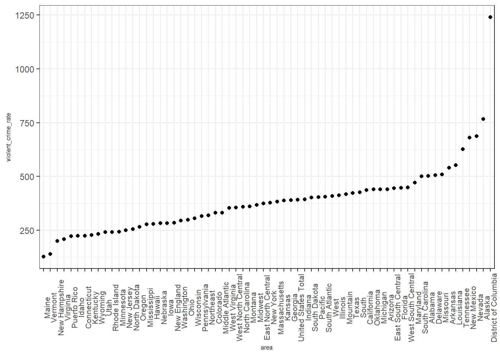

About This Project
load crime and drug data and do some clean up!
library(tidyverse)## ── Attaching packages ───────────────────────────────────────────────── tidyverse 1.2.1 ──## ✔ ggplot2 3.0.0 ✔ purrr 0.2.5
## ✔ tibble 1.4.2 ✔ dplyr 0.7.6
## ✔ tidyr 0.8.1 ✔ stringr 1.3.1
## ✔ readr 1.1.1 ✔ forcats 0.3.0## ── Conflicts ──────────────────────────────────────────────────── tidyverse_conflicts() ──
## ✖ dplyr::filter() masks stats::filter()
## ✖ dplyr::lag() masks stats::lag()library(readxl)Load crime data and some primary clean up
# load data and clean up column names
# not to omit NAs
crime = readxl::read_excel("./data/crime-data-2016.xls", range = ("A4:W202")) %>%
janitor::clean_names() %>%
rename_(population = names(.)[3],
violent_crime_number = names(.)[4],
violent_crime_rate = names(.)[5],
murder_manslaughter_number = names(.)[6],
murder_manslaughter_rate = names(.)[7],
rape_revise_number = names(.)[8],
rape_revise_rate = names(.)[9],
rape_legacy_number = names(.)[10],
rape_legacy_rate = names(.)[11],
robbery_number = names(.)[12],
robbery_rate = names(.)[13],
aggravated_assault_number = names(.)[14],
aggravated_assault_rate = names(.)[15],
property_crime_number = names(.)[16],
property_crime_rate = names(.)[17],
burglary_number = names(.)[18],
burglary_rate = names(.)[19],
larceny_theft_number = names(.)[20],
larceny_theft_rate = names(.)[21],
motor_vehicle_theft_number = names(.)[22],
motor_vehicle_theft_rate = names(.)[23]) %>%
mutate(area = as.factor(area))
crime[,2:23] <- as.numeric(unlist(crime[,2:23]))## Warning: NAs introduced by coercion# fill up area name
i = 1
for (i in 0:65) {
n = 3 * i + 1
crime$area[n + 1] = paste0(crime$area[n])
crime$area[n + 2] = paste0(crime$area[n])
i = i + 1
}
# check head
head(crime)## # A tibble: 6 x 23
## area year population violent_crime_n… violent_crime_r… murder_manslaug…
## <fct> <dbl> <dbl> <dbl> <dbl> <dbl>
## 1 Unit… 2015 320896618 1234183 385. 15883
## 2 Unit… 2016 323127513 1283058 397. 17250
## 3 Unit… NA NA 4 3.2 8.6
## 4 Nort… 2015 56184737 180474 321. 1967
## 5 Nort… 2016 56209510 178244 317. 1955
## 6 Nort… NA NA -1.2 -1.3 -0.6
## # ... with 17 more variables: murder_manslaughter_rate <dbl>,
## # rape_revise_number <dbl>, rape_revise_rate <dbl>,
## # rape_legacy_number <dbl>, rape_legacy_rate <dbl>,
## # robbery_number <dbl>, robbery_rate <dbl>,
## # aggravated_assault_number <dbl>, aggravated_assault_rate <dbl>,
## # property_crime_number <dbl>, property_crime_rate <dbl>,
## # burglary_number <dbl>, burglary_rate <dbl>,
## # larceny_theft_number <dbl>, larceny_theft_rate <dbl>,
## # motor_vehicle_theft_number <dbl>, motor_vehicle_theft_rate <dbl>some further clean up on crime data
# Filter out "percent change" in "year" variable
crime_clean =
crime %>%
filter(year != "NA")
# Create a new dataframe to store the data of different large areas
crime_largearea =
crime_clean %>%
filter(area %in% c("United States Total", "Northeast", "Midwest", "South", "West"))
# Create subtotal for each big areas
crime_northeast =
crime_clean %>%
filter(area %in% c("New England", "Middle Atlantic"))
crime_midwest =
crime_clean %>%
filter(area %in% c("East North Central", "West North Central"))
crime_south =
crime_clean %>%
filter(area %in% c("South Atlantic", "East South Central", "West South Central"))
crime_west =
crime_clean %>%
filter(area %in% c("Mountain", "Pacific", "Puerto Rico"))
# Change the name of "area" to "state"
colnames(crime_clean)[1] = "state"
# Filter out these areas in the tidied dataset
crime_clean =
crime_clean %>%
filter(!state %in% c("United States Total", "Northeast", "Midwest", "South", "West", "New England", "Middle Atlantic", "East North Central", "West North Central", "South Atlantic", "East South Central", "West South Central", "Mountain", "Pacific", "Puerto Rico"))load drug data and clean up
# Remove the block later
drug_raw =
read_csv("./data/drugs.csv") %>%
janitor::clean_names()## Parsed with column specification:
## cols(
## .default = col_integer(),
## `Rates.Alcohol.Abuse Past Year.12-17` = col_double(),
## `Rates.Alcohol.Abuse Past Year.18-25` = col_double(),
## `Rates.Alcohol.Abuse Past Year.26+` = col_double(),
## `Rates.Alcohol.Binge Past Month.12-17` = col_double(),
## `Rates.Alcohol.Binge Past Month.18-25` = col_double(),
## `Rates.Alcohol.Binge Past Month.26+` = col_double(),
## `Rates.Alcohol.Dependence Past Year.12-17` = col_double(),
## `Rates.Alcohol.Dependence Past Year.18-25` = col_double(),
## `Rates.Alcohol.Dependence Past Year.26+` = col_double(),
## `Rates.Alcohol.In Minors.Abuse` = col_double(),
## `Rates.Alcohol.In Minors.Use` = col_double(),
## `Rates.Alcohol.Need Treatment Past Year.12-17` = col_double(),
## `Rates.Alcohol.Need Treatment Past Year.18-25` = col_double(),
## `Rates.Alcohol.Need Treatment Past Year.26+` = col_double(),
## `Rates.Alcohol.Perceptions of Risk.12-17` = col_double(),
## `Rates.Alcohol.Perceptions of Risk.18-25` = col_double(),
## `Rates.Alcohol.Perceptions of Risk.26+` = col_double(),
## `Rates.Alcohol.Use Past Month.12-17` = col_double(),
## `Rates.Alcohol.Use Past Month.18-25` = col_double(),
## `Rates.Alcohol.Use Past Month.26+` = col_double()
## # ... with 43 more columns
## )## See spec(...) for full column specifications.drug_data =
drug_raw %>%
select(year, state,
rates_alcohol_abuse_past_year_12_17:rates_alcohol_dependence_past_year_26,
rates_alcohol_need_treatment_past_year_12_17:rates_illicit_drugs_abuse_past_month_26,
rates_illicit_drugs_cocaine_used_past_year_12_17:rates_illicit_drugs_need_treatment_past_year_26,
rates_marijuana_new_users_12_17:rates_marijuana_used_past_year_26) %>%
gather(key, value, -state, -year) %>%
mutate(key = str_replace_all(key, c("year_" = "year:", "month_" = "month:", "risk_" = "risk:", "users_" = "users:"))) %>%
separate(key, into = c("rate", "age"), sep = ":", extra = "merge") %>%
mutate(rate = str_replace(rate, "^rates_", "")) %>%
spread(rate, value)
population_data =
drug_raw %>%
select(x12_17, x18_25:x26, year, state) %>%
gather(key = "age", value = "popul_in_thousands", -state, -year) %>%
mutate(age = str_replace(age, "x", ""))
drug_clean = left_join(drug_data, population_data)## Joining, by = c("year", "state", "age")Get Y and X for regression
Y: 51 states, each with mean crime rates (10 types of crimes)
crime_mean_rate <-
crime_clean %>%
group_by(state) %>%
select(grep("rate",names(.))) %>%
summarise_all(funs(mean))## Adding missing grouping variables: `state`crime_mean_rate[,2:11] <- crime_mean_rate[,2:11]/100
# check dimension
dim(crime_mean_rate) #right## [1] 51 11head(crime_mean_rate)## # A tibble: 6 x 11
## state violent_crime_r… murder_manslaug… rape_revise_rate rape_legacy_rate
## <fct> <dbl> <dbl> <dbl> <dbl>
## 1 Alab… 5.03 0.078 0.407 0.292
## 2 Alas… 7.68 0.075 1.32 0.949
## 3 Ariz… 4.40 0.05 0.465 0.343
## 4 Arka… 5.40 0.0675 0.696 0.498
## 5 Cali… 4.37 0.0485 0.339 0.250
## 6 Colo… 3.30 0.0345 0.626 0.458
## # ... with 6 more variables: robbery_rate <dbl>,
## # aggravated_assault_rate <dbl>, property_crime_rate <dbl>,
## # burglary_rate <dbl>, larceny_theft_rate <dbl>,
## # motor_vehicle_theft_rate <dbl>X: 51 states, each with mean drug rate (3 types of drugs)
drug_sum_row = drug_clean %>%
group_by(state, age) %>%
select(-year) %>%
summarise_all(funs(mean)) %>%
group_by(state) %>%
select(-age) %>%
summarise_all(funs(sum))
drug_sum_alcohol <-
drug_sum_row %>%
select(grep("alcohol",names(.))) %>%
mutate(alcohol_sum = rowSums(.[1:6])) %>%
select(alcohol_sum)
drug_sum_illicit <-
drug_sum_row %>%
select(grep("illicit",names(.))) %>%
mutate(illicit_sum = rowSums(.[1:4])) %>%
select(illicit_sum)
drug_sum_marijuana <-
drug_sum_row %>%
select(grep("marijuana",names(.))) %>%
mutate(marijuana_sum = rowSums(.[1:4])) %>%
select(marijuana_sum)
drug_mean_rate <- cbind(drug_sum_row$state, drug_sum_alcohol, drug_sum_illicit, drug_sum_marijuana)
head(drug_mean_rate)## drug_sum_row$state alcohol_sum illicit_sum marijuana_sum
## 1 Alabama 348.5669 56.19923 183.4815
## 2 Alaska 378.0608 79.76923 187.6946
## 3 Arizona 381.9392 73.02462 176.6023
## 4 Arkansas 351.6715 61.57769 182.1669
## 5 California 379.2208 73.55615 183.5223
## 6 Colorado 404.9269 90.40385 193.0815# Combine X and Y into one data frame
regression_data_raw = cbind(crime_mean_rate,drug_mean_rate) %>%
select(-rape_legacy_rate, -`drug_sum_row$state`)Linear Regression
# Make linear models for each crime type in each state
regression_model =
regression_data_raw %>%
gather(key = crime_type, value = crime_rate, violent_crime_rate:motor_vehicle_theft_rate) %>%
group_by(crime_type) %>%
nest() %>%
mutate(
linear_model = map(data, ~lm(crime_rate ~ illicit_sum + alcohol_sum + marijuana_sum, data = .x)),
linear_model = map(linear_model, broom::tidy)) %>%
select(-data) %>%
unnest()
regression_model %>%
filter(p.value < 0.1)## # A tibble: 5 x 6
## crime_type term estimate std.error statistic p.value
## <chr> <chr> <dbl> <dbl> <dbl> <dbl>
## 1 murder_manslaughter_ra… illicit_sum -0.00148 0.000852 -1.73 0.0896
## 2 murder_manslaughter_ra… marijuana_… 0.00180 0.00104 1.74 0.0890
## 3 burglary_rate illicit_sum -0.0705 0.0361 -1.95 0.0566
## 4 burglary_rate alcohol_sum -0.0315 0.0100 -3.14 0.00288
## 5 burglary_rate marijuana_… 0.103 0.0439 2.35 0.0231- Put “population” into the model
Set the significant level at 0.1
# Clean up the population data to get the average in each state
population_data = population_data %>%
group_by(state, age) %>%
summarize(mean_pop = mean(popul_in_thousands)) %>%
group_by(state) %>%
summarize(total_pop_thousands = sum(mean_pop))
new_reg_data = left_join(regression_data_raw, population_data)## Joining, by = "state"## Warning: Column `state` joining factor and character vector, coercing into
## character vector# Construct new regression models
new_reg_data %>%
gather(key = crime_type, value = crime_rate, violent_crime_rate:motor_vehicle_theft_rate) %>%
group_by(crime_type) %>%
nest() %>%
mutate(
linear_model = map(data, ~lm(crime_rate ~ illicit_sum + alcohol_sum + marijuana_sum + total_pop_thousands, data = .x)),
linear_model = map(linear_model, broom::tidy)) %>%
select(-data) %>%
unnest() %>%
filter(p.value < 0.1)## # A tibble: 6 x 6
## crime_type term estimate std.error statistic p.value
## <chr> <chr> <dbl> <dbl> <dbl> <dbl>
## 1 murder_manslaughte… illicit_sum -1.48e-3 8.62e-4 -1.71 0.0931
## 2 murder_manslaughte… marijuana_sum 1.80e-3 1.05e-3 1.72 0.0924
## 3 rape_revise_rate total_pop_th… -7.93e-9 4.63e-9 -1.71 0.0935
## 4 burglary_rate illicit_sum -7.10e-2 3.64e-2 -1.95 0.0570
## 5 burglary_rate alcohol_sum -3.18e-2 1.01e-2 -3.14 0.00293
## 6 burglary_rate marijuana_sum 1.03e-1 4.42e-2 2.34 0.0237From the results of regression model that includes “total_population” as variable, we can see that at the significant level of 0.1, the rate of murder and manslaughter is inversely related to that of illicit drug use and positively associated with marijuana use in whole population in U.S.
Burglary rate is negtively related to that of illicit and alcohol use while marijuana use is positively associated with burglary rate in whole population in U.S.
- Try bootstrap of the model of burglary rate
new_reg_data %>%
gather(key = crime_type, value = crime_rate, violent_crime_rate:motor_vehicle_theft_rate) %>%
filter(crime_type == "burglary_rate") %>%
modelr::bootstrap(n = 100) %>%
mutate(
linear_model = map(strap, ~lm(crime_rate ~ illicit_sum + alcohol_sum + marijuana_sum + total_pop_thousands, data = .x)),
results = map(linear_model, broom::tidy)) %>%
select(results) %>%
unnest()## # A tibble: 500 x 5
## term estimate std.error statistic p.value
## <chr> <dbl> <dbl> <dbl> <dbl>
## 1 (Intercept) 1.23e+1 7.74 1.59 0.118
## 2 illicit_sum -5.51e-3 0.0409 -0.135 0.893
## 3 alcohol_sum -3.79e-2 0.0113 -3.36 0.00157
## 4 marijuana_sum 4.15e-2 0.0460 0.902 0.372
## 5 total_pop_thousands -3.22e-9 0.0000000667 -0.0483 0.962
## 6 (Intercept) 1.05e+1 6.69 1.58 0.122
## 7 illicit_sum -4.62e-2 0.0344 -1.34 0.185
## 8 alcohol_sum -3.55e-2 0.0110 -3.22 0.00235
## 9 marijuana_sum 6.11e-2 0.0387 1.58 0.121
## 10 total_pop_thousands -2.21e-8 0.0000000266 -0.829 0.411
## # ... with 490 more rowssome graphs
Group by districts(i.e. Northeast, Midwest, South, West), each district can be subdivide into smaller categories(e.g. Northeast can be divided into New England and Middle Atlantic), which is not explored at the moment(but could be later)
Change anything if you want (HX)
# rank areas by average violent crime rate from 2015 to 2016
crime %>%
group_by(area) %>%
filter(year != "Percent change") %>%
summarise_each(funs(mean)) %>%
mutate(area = fct_reorder(area, violent_crime_rate)) %>%
ggplot(aes(x = area, y = violent_crime_rate)) +
geom_point() +
theme_bw() +
theme(axis.text.x = element_text(angle = 90, size = 8),
title = element_text(size = 6))## `summarise_each()` is deprecated.
## Use `summarise_all()`, `summarise_at()` or `summarise_if()` instead.
## To map `funs` over all variables, use `summarise_all()`
ggplot(crime_clean, aes(x = violent_crime_rate)) + geom_histogram() +
theme_bw()## `stat_bin()` using `bins = 30`. Pick better value with `binwidth`.